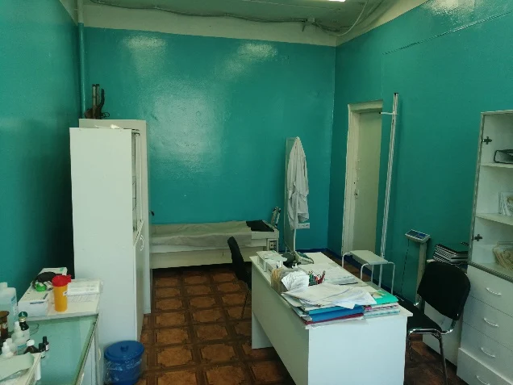
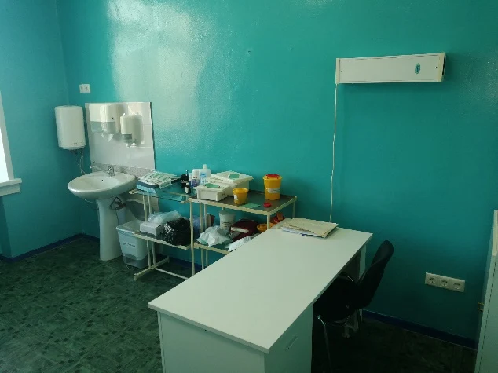
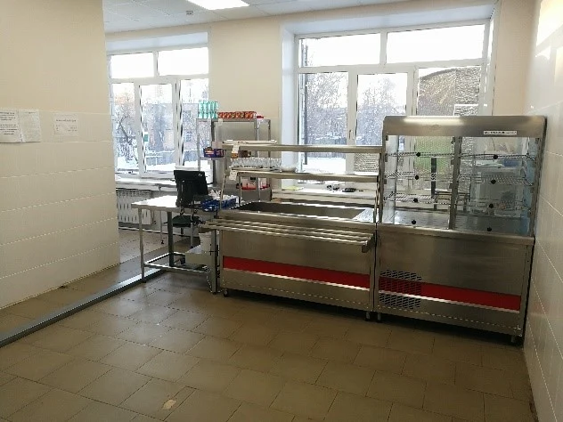
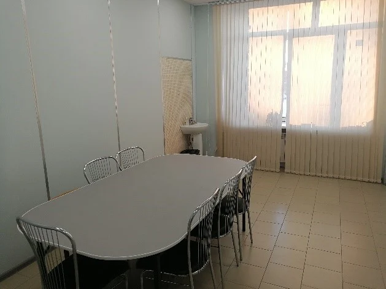
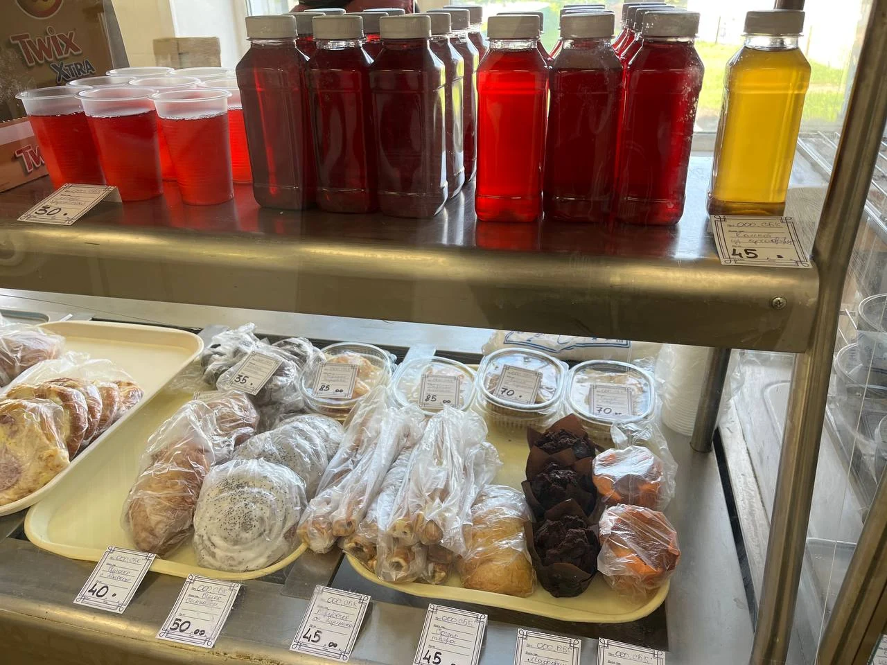
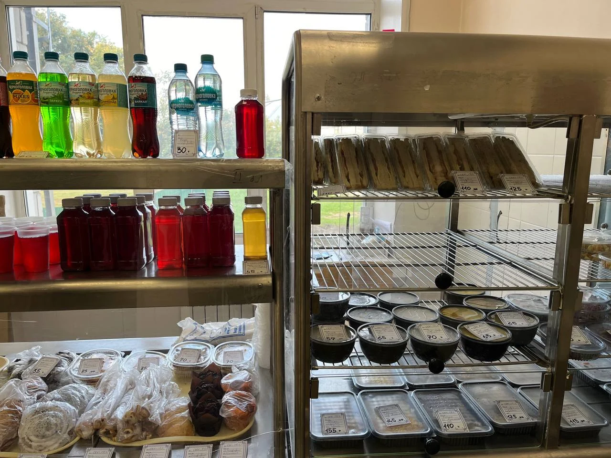
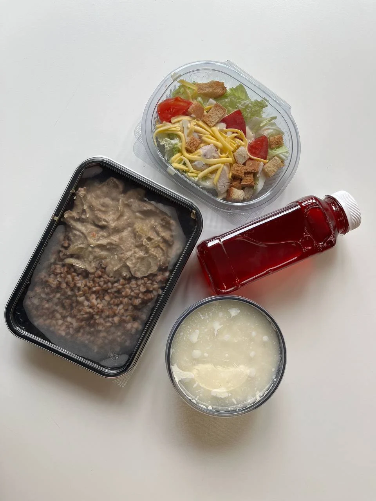

Главная

Сведения об образовательной организации
Материально-техническое обеспечение и оснащённость образовательного процесса. Доступная среда
Условия питания и охраны здоровья обучающихся
Условия питания и охраны здоровья обучающихся
В соответствии со статьей 41 Федерального закона от 29 декабря 2012 № 273-ФЗ «Об образовании в Российской Федерации» колледж создаёт условия, гарантирующие охрану и укрепление здоровья обучающихся. Основные направления охраны здоровья:
- оказание первичной медико-санитарной помощи в порядке, установленном законодательством в сфере охраны здоровья;
-
- организация питания обучающихся;
-
-
определение оптимальной учебной, внеучебной нагрузки,
режима учебных занятий и продолжительности каникул;
пропаганда и обучение навыкам здорового образа жизни, требованиям охраны труда;
организация и создание условий для профилактики заболеваний и оздоровления обучающихся, для занятия ими физической культурой и спортом;
прохождение обучающимися в соответствии с законодательством Российской Федерации периодических медицинских осмотров и диспансеризации;
профилактика и запрещение курения табака или потребления никотинсодержащей продукции, употребления алкогольных, слабоалкогольных напитков, пива, наркотических средств и психотропных веществ, их прекурсоров и аналогов и других одурманивающих веществ;;
обеспечение безопасности обучающихся во время пребывания в колледже;
профилактика несчастных случаев с обучающимися во время пребывания в колледже;
проведение санитарно-противоэпидемических и профилактических мероприятий.
обучение педагогических работников навыкам оказания первой помощи.
1. Оказание первичной медико-санитарной помощи

В колледже созданы все необходимые меры и условия охраны здоровья обучающихся, в том числе инвалидов и лиц с ограниченными возможностями здоровья. Оборудован медицинский кабинет, который осуществляет свою деятельность во взаимодействии с ГБУЗ НСО «ККДП № 27» на основании договора о сотрудничестве
и оказании медицинской помощи обучающимся. Кабинет имеет лицензию на осуществление медицинской деятельности № ЛО-54-01-004733 от 11 декабря 2017 года, выданную Министерством здравоохранения НСО. Медицинский кабинет укомплектован необходимым набором медикаментов для оказания первой медицинской помощи.


2. Организации питания обучающихся
В соответствии со статьей 41 Федерального закона от 29 декабря 2012 № 273-ФЗ «Об образовании в Российской Федерации» колледж создаёт условия, гарантирующие охрану и укрепление здоровья обучающихся. Одним из направлений охраны здоровья является организация питания.
Для обучающихся, работников и посетителей колледжа в учреждении организовано горячее питание. Питание организовано в столовой
на 48 посадочных мест.
Горячее питание в колледже обеспечивает через буфет-раздаточную ООО «СБИК».
Буфет-раздаточная организует питание в соответствии с согласованным меню и работает 6 дней в неделю.
Для организации питьевого режима имеются питьевые фонтанчики.





Порядок предоставления льготного питания
Определенные категории обучающихся имеют право на предоставление им льготного питания:
- дети из малоимущих семей;
- дети, имеющие инвалидность или статус ОВЗ.
Льготное питание предоставляется студентам до их совершеннолетия.
Для того чтобы оформить льготное питание студенту необходимо предоставить социальному педагогу в 500 каб. заявление и один
из документов:
- Для детей из малоимущих семей – документ, подтверждающий статус малоимущей семьи;
- Для детей, имеющих инвалидность или статус ОВЗ – документ, подтверждающий инвалидность или статус ОВЗ;
- Для детей родители которых являются или являлись участниками СВО – документ, подтверждающий участие родителя (ей) на СВО.
Льготное питание предоставляется обучающимся на основании:
- Постановления Правительства Новосибирской области от 13 июля 2015 г. N 251-п «Об обеспечении питанием на льготных условиях детей
из многодетных и малоимущих семей, обучающихся в государственных общеобразовательных организациях Новосибирской области
и в государственных профессиональных образовательных организациях новосибирской области, подведомственных министерству образования, науки и инновационной политики новосибирской области».
- Постановления Правительства Новосибирской области от 13 июля 2015 г. N 253-п "О социальной поддержке отдельных категорий обучающихся образовательных организаций на территории Новосибирской области".
- Положение об организации питания
- Положение об организации питания (СВО)
- Приказ об ответственном за питание
- Приказ о бракеражной комиссии
3. Определение оптимальной учебной, внеучебной нагрузки, режима учебных занятий
и продолжительности каникул.
Образовательная деятельность по основным образовательным программам, в том числе адаптированным, организуется в соответствии
с расписанием учебных занятий. Учебный год в колледже начинается 1 сентября (для очного отделения) и заканчивается в соответствии
с учебным планом. В процессе освоения программ обучающимся предоставляются каникулы. Сроки начала и окончания каникул определяются в соответствии с учебным планом.
4. Пропаганда и обучение навыкам здорового образа жизни, организация и создание условий для профилактики заболеваний и оздоровления обучающихся, для занятия ими физической культурой
и спортом.
Основными направлениями воспитания и социализации обучающихся колледжа является здоровьесберегающее воспитание, включающее
в себя формирование у обучающихся культуры здорового образа жизни, ценностных представлений о физическом здоровье, о ценности духовного и нравственного здоровья; формирование у них навыков сохранения собственного здоровья, овладения здоровьесберегающими технологиями в процессе обучения, трудовой деятельности и во внеурочное время; формирование представлений о ценности занятий физической культурой и спортом, понимания влияния этой деятельности на развитие личности человека, на процесс обучения и взрослую жизнь.
На уроках физкультуры предусмотрена оптимальная физическая нагрузка для обучающихся различных групп здоровья, что находит отражение в учебной программе.
В рамках спортивно-оздоровительного направления организованы кружки и секции: «Баскетбол», «Волейбол», «Бадминтон», «Настольный теннис».
5. Большое внимание в колледже уделяется различным формам и методам первичной профилактике употребления ПАВ, пропаганде ЗОЖ и профилактике аддитивного поведения.
В соответствии с планом работы по ВР ежегодно проводятся: добровольное социально-психологическое обследование (тестирование) всех обучающихся нового набора на склонность к употреблению ПАВ (опросник А.Н. Орёл);
Классные часы: «Курить – здоровью вредить», «Как бросить курить?», «Горькая правда о пиве», «Все о курении: Дело табак», «Мы за здоровый образ жизни», «Вредные привычки и их профилактика», «Мир без никотина!» и т.д. Создан банк фильмов, презентаций, и методических материалов для оказания помощи классным руководителям.
Ежемесячно проходят встречи и беседы с инспекторами ПДН, юристами и представителями службы наркоконтроля. По следующим темам: Антитабачный закон; незаконные приобретение, хранение, перевозка, изготовление, переработка наркотических средств, психотропных веществ или их аналогов; просмотр документально игрового фильма «Твое лицо оставит след на камне шрамом»; и т.д.)
В целях профилактики употребления табачных изделий и электронных сигарет в каждой группе колледжа классные руководители
и заместитель директора по ВР проводят классные часы по темам: «О вреде курения и последствиях потребления табака». В этой работе
им помогают сотрудники Отдела полиции № 3 "Заельцовский" УМВД России по г. Новосибирску:
- Инспекторы по делам несовершеннолетних контролируют территорию учебного заведения (с проверками по курению).
- Регулярно проводят беседы и лекции о вреде курения вейперов:
- На заседании комиссии по профилактике правонарушений по курению присутствуют инспекторы полиции.
- Ежегодно проводится массовое профилактическое мероприятие «Нить Ариадны», в котором отдельно рассматривались вопросы о вреде вдыхания пара электронных сигарет, т.к. это способствует формированию вредной привычки, которая впоследствии может привести к употреблению наркотиков. Мероприятие проводится совместно с информационно-профилактическим отделом «Ювентус-Н» МКУ «Родник».
- Ежегодно проходят общеколледжные собрания: «Родительский урок». На собраниях подробно разъясняется родителям обучающихся почему нельзя покупать их детям вейперы, а также о том какой вред они наносят здоровью.
- Формирование экологической культуры и потребности в здоровом образе жизни.
- В соответствии с планом работы организуются и проводятся лекции и тренинги по профилактике наркомании, токсикомании, алкоголизму, табакокурению совместно с МКУ Центр «Родник»;
- классные часы по данной тематике, с использованием интерактивных программ («Пивной алкоголизм: миф или реальность», «Курение: привычка или болезнь?», «Как бросить курить?», «Что нужно знать о зависимостях?», Профилактика ИППП и ВИЧ/СПИД и др.);
- оформляется наглядная агитация (стенды по профилактике табакокурения, профилактика употребления алкоголя, наркомании);
- проходят мероприятия в рамках Всероссийской акции «Стоп ВИЧ/СПИД»;
- диспуты на морально-этические темы совместно с МКУ Центр «Родник»: киноклуб «ОН и ОНА», с участием в фотоконкурсе «Семья, материнство и детство»;
- Студенты колледжа принимают участие в ежегодной Всероссийской Олимпиаде научных и студенческих работ в сфере профилактики наркомании и наркопреступности.
6. Система обеспечения безопасности, обучающихся во время пребывания в колледже
Охрана колледжа осуществляется штатными сотрудниками в круглосуточном режиме. Колледж оборудован системой охранной сигнализации, системой видеонаблюдения, оборудована прямая связь с «Россгвардией РФ» с использованием кнопки экстренного вызова.
Колледж оборудован автоматической пожарной сигнализацией «Гранд Магистр 24 АПС», объектовой станцией «Стрелец-Мониторинг» исп2, блоком речевого оповещения «Рокот». Требования пожарной безопасности выполняются.
Официальный сайт колледжа адаптирован для лиц с нарушением зрения (слабовидящих).
Инвалидам обеспечивается помощь, необходимая для получения в доступной для них форме информации о правилах предоставления услуги, в том числе об оформлении необходимых для получения услуги документов, о совершении ими других необходимых для получения услуги действий.
7. В колледже разработан комплекс мер по профилактике травматизма обучающихся, а также
определен порядок расследования несчастных случаев, произошедших во время пребывания
студентов в учебном учреждении.
Проведены следующие организационные мероприятия:
- приказами директора назначены: специалист по охране труда, уполномоченный на решение задач в области ГО и ЧС – А.В. Юрченко; ответственный за противопожарную безопасность В.Е. Коваленко;
- разработаны Положения и Инструкции: Вводный инструктаж для студентов; Правила дорожного движения для студентов колледжа электроники и вычислительной техники; Инструкция по безопасности поведения на дорогах для студентов Новосибирского колледжа электроники и вычислительной техники; Инструкция по безопасному поведению на воде; Инструкция по ведению ремонтных работ
во время учебных работ; Инструкция по пожарной безопасности для студентов Новосибирского колледжа электроники и вычислительной
техники; Правила поведения граждан на объектах железнодорожного транспорта; Положение об организации пропускного режима
- и правилах поведения посетителей; Инструкция по усилению бдительности и предупреждению террористических актов в колледже; Положение о расследовании и учете несчастных случаев, происшедших во время учебно-воспитательного процесса; Положение
об организации дежурства и др. локальные акты;
- все сотрудники и студенты после изучения Инструкций и Положений обязаны расписаться в ознакомительных листах;
- ведутся журналы инструктажей;
- в учебном учреждении проводится мониторинг (определяется положительная или отрицательная динамика роста несчастных случаев);
- регулярно проводятся мероприятия по действиям в ЧС;
- систематически на уроках физкультуры проводится инструктаж обучающихся по правилам поведения и охране труда и здоровья при занятиях физическими упражнениями;
- ведется строгий контроль за выполнением норм техники безопасности.
На этой странице
Оказание первичной медико-санитарной помощи
Организация питания обучающихся
Дополнительная информация об охране здоровья обучающихся